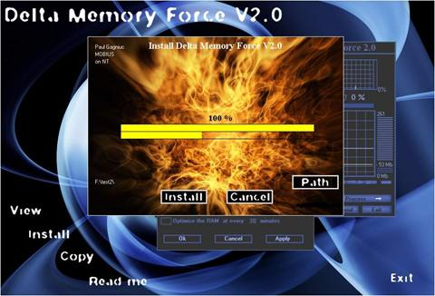
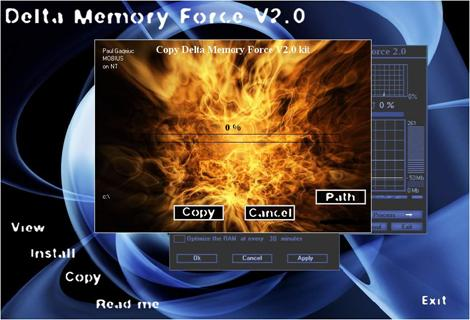
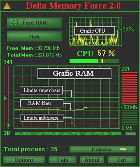
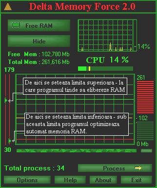
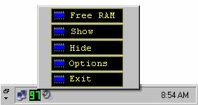
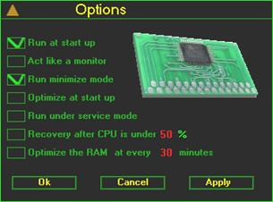
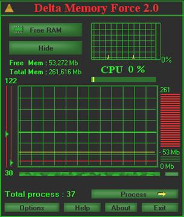
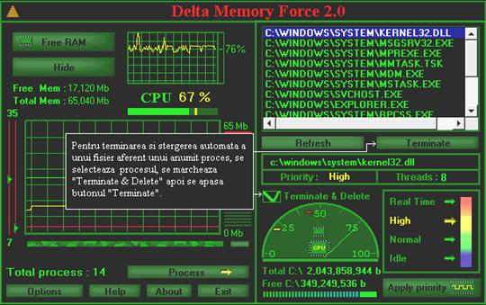
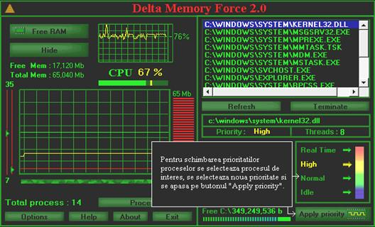
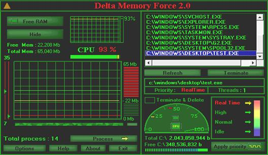

1. Pornirea programului de
instalare de pe CD
2. Programul de instalare
2.1 View
2.2 Install
2.3 Copy
2.4 Read me
3. Ce se gaseste pe CD-ul de instalare ?
3.1 Pachetul de instalare
4. Ce face “Delta Memory
Force” ?
5. De ce este nevoie de
“Delta Memory Force” ?
6. Cum trebuie folosit ?
6.1 Grafic CPU
6.2 Grafic RAM
6.1.1 Limita superioara
6.1.2 Linia Galbena
6.1.3 Limita inferioara
6.1.4 Reglarea limitelor
7. Configurare
7.1 Run at start up
7.2 Monitor only
7.3 Run minimize mode
7.4 Optimize at start up
7.5 Run under service mode
7.6 Recovery after CPU is under n%
7.7 Optimize the RAM at every n minutes
8. Cum arata pe grafic un
sistem in repaos ?
9. Procesele pe sistemele
Windows
10. Ce este un proces ?
11. De ce trebuiesc unele
procese oprite fortat ?
12. Comportament 9x si NT
12.1 Pe sistemele Windows 2000,
XP, etc.
12.2 Pe sistemele Windows 9x si
Me.
12.2.1 Prioritatile proceselor la CPU
13. “Task Manager” sau “Delta
Memory Force” ?
14. Dependente
15. Testari
16. Suport tehnic
17. Istoria programului
“Delta Memory Force”
18. Versiunile viitoare
19. Licenta
20. Cumparare

1. Pornirea programului de
instalare de pe CD
Daca ati dezactivat optiunea de AUTORUN din setarile sistmului, puteti rula fisierul Start.exe de pe CD.
In cazul in care aveti pachetul de instalare in forma arhivata, trebuie sa rulati fisierul Setup.exe din interiorul arhivei.Aveti nevoie de programul WinZip,WinAce,WinRAR, in functie de tipul arhivei.CD-ul contine pachetul de instalare in mai multe variante de comprimare:
Ø DMF_KIT.zip
Ø DMF_KIT.rar
Ø DMF_KIT.ace
Ø DMF_KIT.exe
Ø DMF_KIT.cab
Ø DMF_KIT.tar
Ø DMF_KIT.lzh
Ø DMF_KIT.jar
2. Programul de instalare
2.1 View - utilizatorul are posibilitatea de a rula
“Delta Memory Force” direct de pe CD, fara a instala
programul.

2.2 Install - Utilizatorul trebuie sa-si aleaga directorul in care “Delta Memory Force” va fi instalat. Dupa apasarea butonului “Install” procesul de instalare dureaza doar citeva secunde.

2.3 Copy - utilizatorul poate sa
copieze pachetul de instalare “DMF_KIT.ZIP” in vederea distribuirii, stocarii
sau instalarii acestui software.
2.4 Read me - deschide “DMF.doc” de pe CD sau din pachetul de instalare (necesita prezenta programului “Word”).
3. Ce se gaseste pe CD-ul
de instalare ?
Ø CD:\AUTORUN.INF
Ø CD:\DMF\Start.exe
Ø CD:\DMF\DMF.DLL
Ø CD:\DMF\DMF.doc
Ø CD:\DMF\CD\Sunet\xx.wav
Ø CD:\DMF\CD\Sunet\S_fundal.wav
Ø CD:\DMF\CD\Aferent\Cruce.ani
Ø CD:\DMF\CD\Aferent\DMF.ico
Ø CD:\DMF\CD\Aferent\DMF.doc
Ø CD:\DMF\DMF\g2.exe
Ø CD:\DMF\DMF\DMF.DLL
Ø CD:\DMF\DMF\mscomctl.ocx
Ø CD:\DMF\DMF\VB6STKIT.DLL
Ø CD:\DMF\DMF\msvcrt.dll
Ø CD:\DMF\DMF\Rsrc32.dll
Ø CD:\DMF\DMF\winmm.dll
Ø CD:\DMF\Instalare\g2.exe
Ø CD:\DMF\Instalare\DMF.dll
Ø CD:\DMF\Instalare\DMF.doc
Ø CD:\DMF\Instalare\mscomctl.ocx
Ø CD:\DMF\Instalare\VB6STKIT.DLL
Ø CD:\DMF\Instalare\msvcrt.dll
Ø CD:\DMF\Instalare\Rsrc32.dll
Ø CD:\DMF\Instalare\winmm.dll
Ø CD:\DMF\KIT\DMF_KIT.zip
Ø CD:\DMF\KIT\DMF_KIT.rar
Ø CD:\DMF\KIT\DMF_KIT.ace
Ø CD:\DMF\KIT\DMF_KIT.exe
3.1 Pachetul de instalare – trebuie sa contina:
ü Setup.exe
ü DMF_2004.DLL
ü DMF\g2.exe
ü DMF\DMF_2004.DLL
ü DMF\DMF.doc
ü DMF\mscomctl.ocx
ü DMF\VB6STKIT.DLL
ü DMF\msvcrt.dll
ü DMF\Rsrc32.dll
ü DMF\winmm.dll
ü DMF\xx.wav
4. Ce face “Delta Memory
Force” ?
ü DMF(Delta Memory Force) este proiectat sa elibereze memoria RAM in functie de setarile pe care utilizatorul le face asupra programului.
Pe sistemele de operare Windows 9x si Me:
ü programul poate opri procesele invizibile la combinatia de taste Alt-Ctrl-Del.
ü poate schimba prioritatile proceselor la CPU.
ü Poate sterge fisierul aferent unui anumit proces, automat.
ü Monitorizeaza CPU in timp real.
ü Monitorizeaza RAM in timp real.
5. De ce este nevoie de “Delta
Memory Force” ?
ü In cazul in care un program (jocuri 3D, programe de grafica, editoare de filme etc.) necesita multa memorie RAM, DMF poate elibera RAM pentru incarcarea programului respectiv.
ü DMF poate mentine memoria eliberata la nivel aproximativ constant.
Pe sistemele 9x si Me:
ü poate viziona toate procesele din memorie cu exceptia proceselor vitale ale sistemului de operare.
ü poate schimba prioritatile proceselor la CPU.
ü Delta Memory Force poate fi folosit si pentru anumite teste asupra relatiei RAM - CPU, putind oferi informatii intuitive asupra proceselor care ruleaza la un moment dat.
ü Poate oferi informatii utile asupra suprasolicitarii procesorului de catre anumite procese.
ü Utilizatorii mai avansati pot studia comportamentul programelor “trojan”. Multe programe de acest tip dupa o oprire fortata a executiei, pun in functiune copii ale acestora iar cu ajutorul “Delta Memory Force” aceste procese sunt reperate si distruse.
ü Pot fi efectuate studii intuitive asupra proceselor.
6. Cum trebuie folosit ?
Mai jos sunt prezentate cele doua
grafice ce monitorizeaza memoria RAM si procesorul sistemului pe care “Delta
Memory Force” este instalat.

6.1 Grafic CPU:
Acest grafic arata utilizatorului nivelul de utilizare al CPU, in timp real.
6.2 Grafic RAM:
6.2.1 Limita superioara(linia verde deschis) – este limita la care programul incearca sa elibereze memoria RAM(poate fi stabilita de utilizator)
6.2.2 Linia Galbena – reprezinta memoria RAM libera, in timp real.
6.2.3 Limita inferioara(linia
rosie) – daca linia galbena va cobori sub limita inferioara, programul va
optimiza automat memoria RAM.(in cazul in care programul nu este setat pentru a
se comporta ca “monitor”).
6.2.4 Reglarea limitelor – Limita inferioara(linia rosie) este limita de alarma, la ridicarea acestei limite peste nivelul memoriei RAM libere(linia galbena), “Delta Memory Force” va incepe eliberarea memoriei RAM pina la limita superioara. Aducerea limitei de alarma peste limita superioara va avea ca urmare o eliberare continua a memoriei RAM. Aceasta posibilitate de aducere a limitei de alarma peste limita superioara a fost lasata special pentru anumite teste pe care cei mai avansati dinte utilizatori le pot efectua pe anumite sisteme de operare pentru studiul unei anumite configuratii software/hardware.

Programul anunta in timp real utilizatorul asupra memoriei RAM libere:

Dupa instalare programul este setat sa optimizeze automat in cazul in care memoria RAM scade sub limita inferioara. Daca utilizatorul doreste sa nu simta prezenta programului la fiecare pornire a sistemului, va trebui sa activeze obtiunile programului ca mai jos:

Cu “Delta Memory Force” rezident in memorie PC-ul va avea suficient spatiu pentru a rula programe complexe.
7. Configurare
7.1 Run at start up - programul porneste automat la incarcarea sistemului de operare.
7.2 Monitor only - programul nu optimizeaza memoria RAM, facind doar o monitorizare a memoriei RAM si a CPU.
7.3 Run minimize mode - pornirea programului se face intr-un mod discret, fara interventia utilizatorului.
7.4 Optimize at start up - la pornire, programul optimizeaza RAM automat.
7.5 Run under service mode - programul se inregistreaza ca service(valabil doar pentru 9x si Me)
7.6 Recovery after CPU is under n% - pentru a nu suprasolicita CPU, optimizarea se face doar atunci cind nivelul de utilizare al procesorului este sub n%.
7.7 Optimize the RAM at every n minutes
- optimizarea RAM se face automat la fiecare “n” minute.
8. Cum arata pe grafic un
sistem in repaos ?
In mod normal procesorul trebuie sa aiba pe grafic fluctuatii intre 0 si 4%,
aceste estimari ale fluctuatiilor sunt relative datorita posibilelor programe
rezidente in memorie la un moment dat.

9. Procesele pe sistemele
Windows
Ca majoritatea sistemelor de operare si Windows poate rula mai multe programe aproximativ in acelasi timp.
Pentru a putea executa toate programele, sistemul de operare Windows da acces la CPU fiecarui proces din memorie, pe rind, in functie de prioritatea pe care o are, asfel creind iluzia ca toate procesele sunt executate in paralel.In cazul PC-urilor cu mai multe procesoare am putea spune ca este o semiiluzie deoarece procesele sunt executate atit in paralel cit si pe rind, in functie de numarul proceselor din memorie.
10. Ce este un proces ?
Daca cuvintul program face referire la codul executabil(fisier exe,pif,scr etc.), un proces este un program care este executat la procesor.
In momentul in care un program porneste, codul sau este incarcat in memorie.Apoi sistemul de operare adauga noul proces linga celelalte procese, asigurind acestuia timp la procesor, memorie si alte resurse.Sistemul de operare tine “un jurnal” cu resursele folosite de catre fiecare proces.Atunci cind unui proces ii este stopata executia, toate resursele folosite de acest proces sunt returnate sistemului de operare.
Fata de memorie si alte resurse similare, timpul la procesor nu poate fi cerut de catre proces, dar poate fi impartit egal intre toate procesele, diferind prioritatile.Aceasta inseamna ca un proces cu o prioritate mai inalta va fi lasat sa foloseasca CPU inaintea proceselor cu o prioritate mai mica.Ca exemplu , Kernel.dll (“priority hight”) va putea opri executia unui proces cu o prioritate mai mica(“priority normal”) pentru indeplinirea unor functii de sistem.
11. De ce trebuiesc unele
procese oprite fortat ?
In majoritatea cazurilor de “blocare a sistemului”, unul dintre procese foloseste CPU mai mult decit ii este permis. In concluzie acel proces trebuie oprit fortat pentru a permite si celorlalte procese accesul la CPU.
12. Comportament 9x si NT
“Delta Memory Force” este compatibil cu toate sistemele de operare Windows, dar comportamentul difera in functie de fiecare sistem.Progromul a fost proiectat pentru sistemele 9x, apoi a fost adaptat la NT.
12.1 Pe sistemele Windows 2000, XP, etc.
Sistemele mai noi cum sunt Windows 2000 sau XP permit modificarea timpului unui anumit proces la CPU si oprirea orcarui proces din “Task Manager”.Delta Memory Force, pentru aceste sisteme de operare,( ce permit vizionarea si oprirea proceselor cu ajutorul programului “Task Manager”) nu mai este echipat cu partea de vizionare/oprire procese, deoarece nu-si are sensul.
12.2 Pe sistemele Windows 9x si Me.
Sistemele 9x si Me nu dau posibilitatea utilizatorului de a schimba timpul unui proces la CPU si nu permit vizionarea proceselor inregistrate ca “service”.Delta Memory Force vine in sprijinul utilizatorilor 9x si Me, permitind schimbarea timpului la CPU al oricarui proces.Pe aceste sisteme utilizatorul poate viziona/opri si sterge automat fisierul aferent procesului oprit.
Pentru terminarea si stergerea automata a unui fisier aferent unui anumit proces, se selecteaza procesul, se marcheaza "Terminate & Delete", apoi se apasa butonul "Terminate".

12.2.1 Prioritatile proceselor la CPU - Pentru schimbarea prioritatilor proceselor se selecteaza procesul de interes, se selecteaza noua prioritate si se apasa pe butonul “Apply priority”.De remarcat este faptul ca schimbarea prioritatii in “Real Time”, pentru un proces ce foloseste CPU constant si nu pentru perioade scurte de timp, poate duce la destabilizarea sistemului de operare si blocarea acestuia.Modificarea prioritatii procesului principal “KERNEL32.DLL” duce la blocarea sistemului.
Exista si programe ale sistemului de operare ce folosesc
prioritati mai joase de “Normal”, acestea sunt programele “Screen Saver”, ele
nefiind vitale pentru functionarea sistenului.

Exemplu - Mai jos se arata cum prioritatea procesului test.exe, a fost
schimbata din “

13. “Task Manager” sau
“Delta Memory Force” ?
Daca utilizatorul are instalat Windows 2000 sau XP, poate folosi “Task Manager” pentru terminarea proceselor si schimbarea prioritatilor.Pentru aceste sisteme “Delta Memory Force” nu are functia de vizionare/oprire a proceselor deoarece exista “Task Manager”.
Sistemele 9x si Me nu permit vizionarea proceselor inregistrate ca “service”.Delta Memory Force , pentru sistemele 9x si Me are functia pe care o are “Task Manager” in Windows 2000 si XP, putind viziona si opri procese, schimba prioritati, monitoriza resursele, formula stasistici.
In concluzie “Delta Memory Force” are functia de “Task
Manager” doar pe sistemele 9x si Me, sistemele Windows
2000 si XP avind programul “Task Manager”.
14. Dependente
Singura dependenta este DMF_2004.DLL
15. Testari
Programul a fost testat pe diferite tipuri de procesoare si memorii RAM:
Ø CPU - 133MHz pina la 3GHz
Ø RAM - 16Mb pina la 512Mb
Ø OS - Windows 95,98, 98SE, Me, 2000,XP.
16. Suport tehnic
www.NovusOrdo.ro\software\dmf\dmf.php
17. Istoria programului
“Delta Memory Force”
Prima versiune a programului “Delta Memory Force” a fost proiectata in 2001, timp de doua luni noapte de noapte, cu multa Coca Cola si multe pachete de tigari, fiind o versiune functionala doar pe 9x si Me, datorita posibilitatilor hardware de care dispuneam la acea vreme.
Pina la inceputul anului 2004 acest program nu a iesit de pe HDD-ul autorului(ca multe alte programe) , fiind neglijat. In ianuarie 2004 programul a fost adaptat si la platformele Windows 2000, XP etc., pachetul de instalare cu programele aferente lui fiind terminate si scrise pe CD-ul matrita in patru zile.
18. Versiunile viitoare
Versiunile viitoare a DMF vor aduce nou :
Ø Controlul memoriei RAM al fiecarui PC dintr-o retea LAN, de catre administrator.
Ø Stergerea automata a fisierului unui anumit proces si pe platforme NT.
19. Licenta
Programul este protejat de "Oficiul Roman pentru Drepturi de Autor" din anul 2001.Este interzisa inchirierea sau vinzarea programului fara acordul scris al autorului.
Copierea si distribuirea pachetului de instalare ESTE PERMISA,conditia este ca pachetul de instalare sa contina toate fisierele de mai jos:
ü Setup.exe
ü DMF_2004.DLL
ü DMF\g2.exe
ü DMF\DMF_2004.DLL
ü DMF\DMF.doc
ü DMF\mscomctl.ocx
ü DMF\VB6STKIT.DLL
ü DMF\msvcrt.dll
ü DMF\Rsrc32.dll
ü DMF\winmm.dll
ü DMF\xx.wav
Includerea altor fisiere in pachetul de instalare, inafara celor din lista de mai sus, este interzisa.
Modificarea fisierelor din pachetul de instalare este interzisa.
Toate drepturile asupra programului "Delta Memory Force" apartin in exclusivitate autorului.
20. Cumparare
Utilizatorului i se ofera 30 de porniri dupa care programul inceteaza sa mai functioneze.Programul nu este dependent de timp ci numai de numarul de porniri.
Cumpararea se face online prin intermediul programului, la www.NovusOrdo.ro
Anno Domini 2004
Software & Copyright by Paul Gagniuc